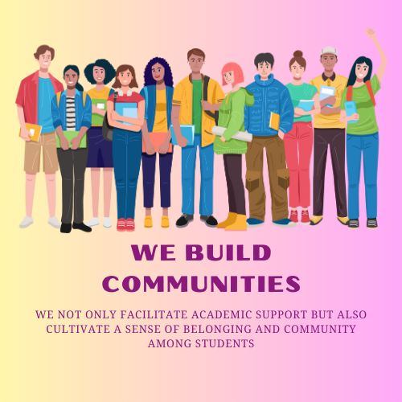

Smart matching
Filter tutors by subject expertise, availability, and ratings to find the perfect peer mentor without back-and-forth scheduling.
Discover subject specialists, schedule focused sessions, and share learning resources inside an uplifting academic community.

TutorConnect helps you match with the right mentor, stay organised, and keep track of your academic growth all in one place.
Filter tutors by subject expertise, availability, and ratings to find the perfect peer mentor without back-and-forth scheduling.
Book or reschedule sessions in seconds with real-time calendar availability, automated reminders, and integrated video links.
Build collaborative knowledge hubs with curated materials, revision decks, and session notes that stay accessible for everyone.
Browse verified tutors, their specialties, teaching styles, and success stories. Quick filters make it easy to discover the perfect fit.
Pick your ideal slot, outline topics, and receive confirmation instantly. Our scheduling engine eliminates the tedious back-and-forth.
After each session, capture action items, upload supporting resources, and keep every conversation searchable from your dashboard.
Every interaction ends with a reflection so we can continuously improve TutorConnect together.
“I booked a calculus session on a Sunday night and had my concepts solid within an hour. The tutor followed up with revision notes that saved me days.”
“The shared resource hub keeps every sheet, recording, and tip organised. My study group just jumps in and keeps building together.”
“I volunteer as a tutor and love the streamlined dashboard. Approving sessions and tracking impact has never felt this seamless.”
Create an account, connect with mentors, and keep progressing with insights driven by your own community.
Manage your availability, approve session requests, and map cohort performance all from a single transparent workspace.
Become a tutor